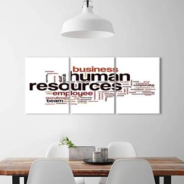

IMPORTANCE OF REFERENCE LETTERS DURING APPLICATION PROCESS IN ACADEMIA AND IN PROFESSIONAL LIFE
A reference letter is a necessity for various reasons in the academic and business world. Although it is not the sole reason for an application to be approved or rejected, its absence when requested can cause an application to be dropped from the evaluation process. For example, If you are applying to a school where the acceptance rate is very low or to a highly regarded scholarship, you can make a difference with a well-written reference letter among the applicants.
 In short, starting from high school thru all your education life, when applying for internships, and all along with your career, a reference letter can be one of is written) the requirements for the application. RefinDepot is a digital platform to help you request a reference letter and store them for you to use multiple times (In case the letter is general and can be used for a wide variety of applications) whenever you need it. That way, you do not have to go through the same process over and over again to obtain a letter when you need it but, use one from your storage without losing any time so you do not miss any opportunities on the way. Apart from an online reference letter request module and online reference letter generator functions, RefinDepot platform has also a detailed information pool for CV/Resume examples and how to create a successful CV/Resume, how to create approval oriented cover letters, suggestions for interviews, and education as well as scholarship opportunities all around the world.